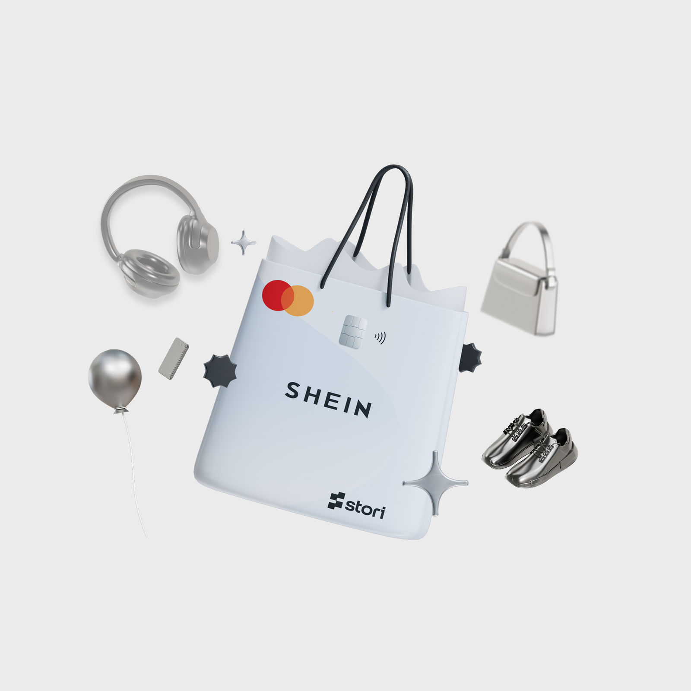
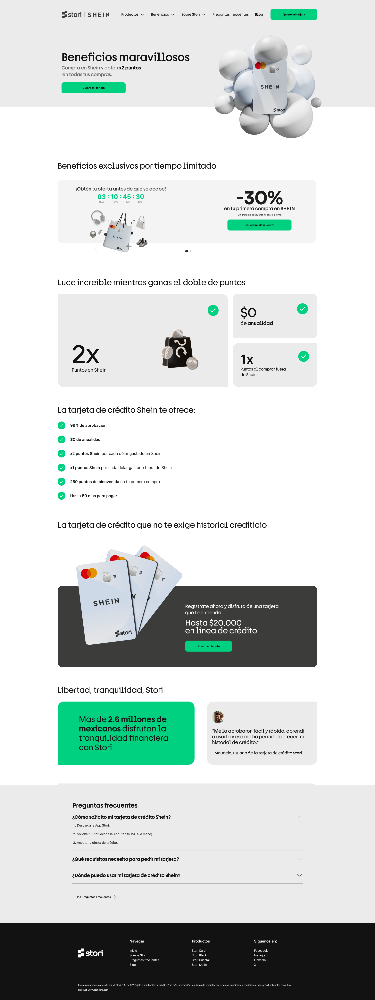

Stori × SHEIN.
A co-branded credit card's landing page has one job: make the value obvious in the first screen. Here's how user research turned a cluttered benefits list into a clearer page — and lifted conversion by 10–15%.
A co-branded product, a bottleneck of a page.
Stori partnered with SHEIN to launch a co-branded financial product — a credit card with exclusive benefits for SHEIN's users. The product itself was compelling. The landing page was the bottleneck.
At the time, the page converted at roughly 70%. The goal was to push that higher — not with a louder design, but by making the value proposition genuinely easy to understand.

Too many benefits, no clear priority.
The product came loaded with benefits — but it wasn't clear which ones actually mattered to users. Everything was presented as equally important, which meant nothing stood out.
The landing page had to do four things:
- Communicate the product's value quickly.
- Highlight the most compelling benefits.
- Reduce friction in the application process.
- Improve the conversion rate.
The team's hypothesis: clarifying the value proposition and prioritizing the most relevant benefits would move the number. My job was to find out which benefits those were — and design around them.
Owning the page, end to end.
As Product Designer on this initiative, I owned the work from research through final UI:
- UX strategy — defining what the page needed to prove, and to whom.
- User research & insights synthesis — running interviews and turning them into design direction.
- Information hierarchy & content prioritization — deciding what leads, what follows, and what gets cut.
- UI design & visual layout — the final, shippable page.
- Collaboration with product and marketing — aligning the design with the co-brand and the campaign.
Ask users what they value — don't assume it.
To understand what users actually valued — not what we assumed they valued — I ran in-person user interviews with potential customers. I wanted to learn three things:
- Which benefits were most attractive to them.
- What information they needed before applying.
- What doubts or friction points existed in the decision process.
The conversations made one thing clear: users weren't weighing every benefit equally. They were drawn to a few specific ones — and the rest didn't add value to the page. They added noise.
"Users were primarily motivated by a few specific benefits. Everything else wasn't helping them decide — it was getting in the way."
Three decisions, all downstream of one insight.
01 — Clarify the value proposition
The page was redesigned so the main benefit lands immediately — users understand the value within the first screen, instead of having to dig for it. Rather than presenting every feature equally, I prioritized the benefits most likely to drive adoption.
02 — Group and prioritize benefits
Originally, benefits were presented in a long, flat list that diluted every item. The redesign grouped them into clear categories and gave the most attractive ones visual priority — making the page easy to scan and understand.
03 — Borrow urgency from a familiar pattern
SHEIN's audience is fluent in time-limited promotions — flash sales, countdown windows, exclusive deals. Rather than invent a new motivator, we met users in language they already understood: a focused popup that framed the credit card as a special, time-bound offer. Familiar mechanic, familiar urgency — applied to a product whose value pays off long after the promo ends.
Refining toward clarity.
The final landing didn't arrive in one pass. An earlier iteration moved in the right direction — value prop forward, benefits grouped — but still carried too much weight on the page. Each round of refinement trimmed what wasn't earning its space.
Early iteration
 Moving in the right direction — but still too heavy
Moving in the right direction — but still too heavy
Final

The final landing — clearer about lessClearer messaging, measurable lift.
After the redesigned landing page shipped, the results showed up where they mattered:
Users understood the product value faster, and the experience became clearer and more focused on the benefits that mattered most. It was a direct line from research to revenue: clearer messaging and better information hierarchy measurably moved product adoption.
What this project reinforced.
- Validate assumptions through direct user research — not internal opinion about what users "probably" want.
- Prioritize information based on real user needs — not the full inventory of features a product happens to have.
- Design for clarity, not feature quantity — more benefits on a page rarely means more conversions.
Even small improvements in how benefits are communicated can significantly shift user decisions and product conversion. The page didn't need more — it needed to be clearer about less.